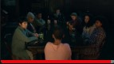
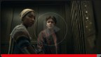
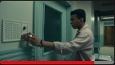
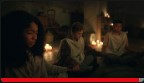

95 % de coincidencia
2022
2 temporadas
DV
AD
"Medianoche"
A la mañana siguiente, la Dra.Shanton regaña a Ilonka y revela más
detalles sobre Julia Jayne. Sandra se despide. Kevin termina de contar
su historia
EpisodiosTemporada 1
Reparto: Iman Benson, Igby Rigney,
Ruth Codd, más
Géneros: Misterios TV,Series TV
basadas en libros,Series TV juveniles
Pertenece a: Sombría, Íntima, De
suspense
1
Episodio 150 min
Cuando el cáncer pulveriza sus planes universitarios, la joven Ilonka encuentra un
rayo de esperanza en Brightcliffe, un misterioso centro para enfermos terminales.
2
Episodio 258 min
Cuando el cáncer pulveriza sus planes universitarios, la joven Ilonka encuentra un
rayo de esperanza en Brightcliffe, un misterioso centro para enfermos terminales.
3
Episodio 359 min
Cuando el cáncer pulveriza sus planes universitarios, la joven Ilonka encuentra un
rayo de esperanza en Brightcliffe, un misterioso centro para enfermos terminales.
4
Episodio 451 min
Cuando el cáncer pulveriza sus planes universitarios, la joven Ilonka encuentra un
rayo de esperanza en Brightcliffe, un misterioso centro para enfermos terminales.
5
Episodio 555 min
Cuando el cáncer pulveriza sus planes universitarios, la joven Ilonka encuentra un
rayo de esperanza en Brightcliffe, un misterioso centro para enfermos terminales.
6
Episodio 653 min
Cuando el cáncer pulveriza sus planes universitarios, la joven Ilonka encuentra un
rayo de esperanza en Brightcliffe, un misterioso centro para enfermos terminales.